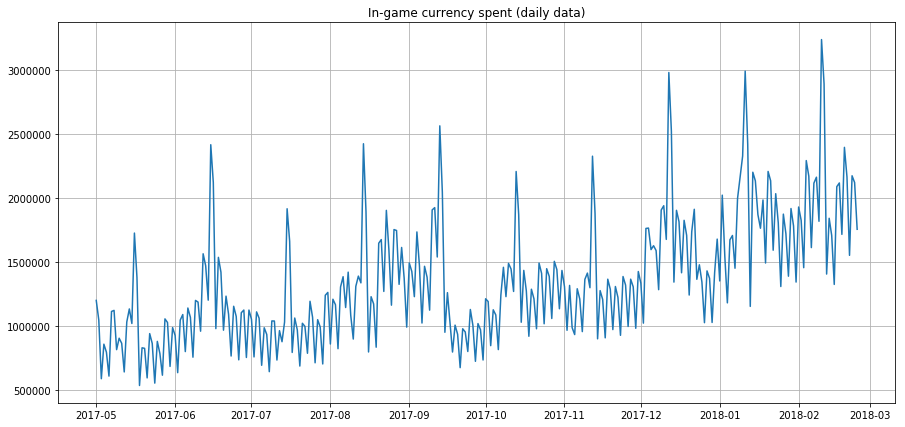
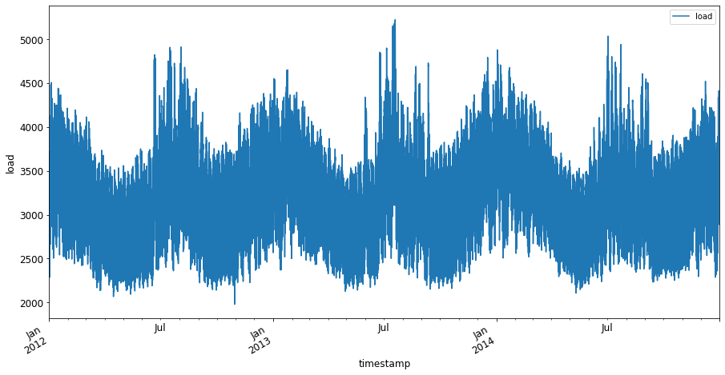
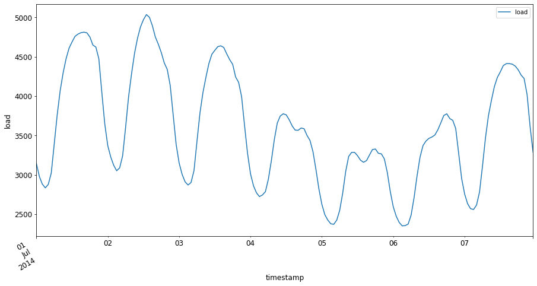

Introduction to time series forecasting⚓︎

Sketchnote by Tomomi Imura
In this lesson and the following one, you will learn a bit about time series forecasting, an interesting and valuable part of a ML scientist's repertoire that is a bit less known than other topics. Time series forecasting is a sort of 'crystal ball': based on past performance of a variable such as price, you can predict its future potential value.

🎥 Click the image above for a video about time series forecasting
Pre-lecture quiz⚓︎
It's a useful and interesting field with real value to business, given its direct application to problems of pricing, inventory, and supply chain issues. While deep learning techniques have started to be used to gain more insights to better predict future performance, time series forecasting remains a field greatly informed by classic ML techniques.
Penn State's useful time series curriculum can be found here
Introduction⚓︎
Suppose you maintain an array of smart parking meters that provide data about how often they are used and for how long over time.
What if you could predict, based on the meter's past performance, its future value according to the laws of supply and demand?
Accurately predicting when to act so as to achieve your goal is a challenge that could be tackled by time series forecasting. It wouldn't make folks happy to be charged more in busy times when they're looking for a parking spot, but it would be a sure way to generate revenue to clean the streets!
Let's explore some of the types of time series algorithms and start a notebook to clean and prepare some data. The data you will analyze is taken from the GEFCom2014 forecasting competition. It consists of 3 years of hourly electricity load and temperature values between 2012 and 2014. Given the historical patterns of electricity load and temperature, you can predict future values of electricity load.
In this example, you'll learn how to forecast one time step ahead, using historical load data only. Before starting, however, it's useful to understand what's going on behind the scenes.
Some definitions⚓︎
When encountering the term 'time series' you need to understand its use in several different contexts.
🎓 Time series
In mathematics, "a time series is a series of data points indexed (or listed or graphed) in time order. Most commonly, a time series is a sequence taken at successive equally spaced points in time." An example of a time series is the daily closing value of the Dow Jones Industrial Average. The use of time series plots and statistical modeling is frequently encountered in signal processing, weather forecasting, earthquake prediction, and other fields where events occur and data points can be plotted over time.
🎓 Time series analysis
Time series analysis, is the analysis of the above mentioned time series data. Time series data can take distinct forms, including 'interrupted time series' which detects patterns in a time series' evolution before and after an interrupting event. The type of analysis needed for the time series, depends on the nature of the data. Time series data itself can take the form of series of numbers or characters.
The analysis to be performed, uses a variety of methods, including frequency-domain and time-domain, linear and nonlinear, and more. Learn more about the many ways to analyze this type of data.
🎓 Time series forecasting
Time series forecasting is the use of a model to predict future values based on patterns displayed by previously gathered data as it occurred in the past. While it is possible to use regression models to explore time series data, with time indices as x variables on a plot, such data is best analyzed using special types of models.
Time series data is a list of ordered observations, unlike data that can be analyzed by linear regression. The most common one is ARIMA, an acronym that stands for "Autoregressive Integrated Moving Average".
ARIMA models "relate the present value of a series to past values and past prediction errors." They are most appropriate for analyzing time-domain data, where data is ordered over time.
There are several types of ARIMA models, which you can learn about here and which you will touch on in the next lesson.
In the next lesson, you will build an ARIMA model using Univariate Time Series, which focuses on one variable that changes its value over time. An example of this type of data is this dataset that records the monthly C02 concentration at the Mauna Loa Observatory:
| CO2 | YearMonth | Year | Month |
|---|---|---|---|
| 330.62 | 1975.04 | 1975 | 1 |
| 331.40 | 1975.13 | 1975 | 2 |
| 331.87 | 1975.21 | 1975 | 3 |
| 333.18 | 1975.29 | 1975 | 4 |
| 333.92 | 1975.38 | 1975 | 5 |
| 333.43 | 1975.46 | 1975 | 6 |
| 331.85 | 1975.54 | 1975 | 7 |
| 330.01 | 1975.63 | 1975 | 8 |
| 328.51 | 1975.71 | 1975 | 9 |
| 328.41 | 1975.79 | 1975 | 10 |
| 329.25 | 1975.88 | 1975 | 11 |
| 330.97 | 1975.96 | 1975 | 12 |
✅ Identify the variable that changes over time in this dataset
Time Series data characteristics to consider⚓︎
When looking at time series data, you might notice that it has certain characteristics that you need to take into account and mitigate to better understand its patterns. If you consider time series data as potentially providing a 'signal' that you want to analyze, these characteristics can be thought of as 'noise'. You often will need to reduce this 'noise' by offsetting some of these characteristics using some statistical techniques.
Here are some concepts you should know to be able to work with time series:
🎓 Trends
Trends are defined as measurable increases and decreases over time. Read more. In the context of time series, it's about how to use and, if necessary, remove trends from your time series.
Seasonality is defined as periodic fluctuations, such as holiday rushes that might affect sales, for example. Take a look at how different types of plots display seasonality in data.
🎓 Outliers
Outliers are far away from the standard data variance.
🎓 Long-run cycle
Independent of seasonality, data might display a long-run cycle such as an economic down-turn that lasts longer than a year.
🎓 Constant variance
Over time, some data display constant fluctuations, such as energy usage per day and night.
🎓 Abrupt changes
The data might display an abrupt change that might need further analysis. The abrupt shuttering of businesses due to COVID, for example, caused changes in data.
✅ Here is a sample time series plot showing daily in-game currency spent over a few years. Can you identify any of the characteristics listed above in this data?

Exercise - getting started with power usage data⚓︎
Let's get started creating a time series model to predict future power usage given past usage.
The data in this example is taken from the GEFCom2014 forecasting competition. It consists of 3 years of hourly electricity load and temperature values between 2012 and 2014.
Tao Hong, Pierre Pinson, Shu Fan, Hamidreza Zareipour, Alberto Troccoli and Rob J. Hyndman, "Probabilistic energy forecasting: Global Energy Forecasting Competition 2014 and beyond", International Journal of Forecasting, vol.32, no.3, pp 896-913, July-September, 2016.
-
In the
workingfolder of this lesson, open the notebook.ipynb file. Start by adding libraries that will help you load and visualize dataimport os import matplotlib.pyplot as plt from common.utils import load_data %matplotlib inlineNote, you are using the files from the included
commonfolder which set up your environment and handle downloading the data. -
Next, examine the data as a dataframe calling
load_data()andhead():data_dir = './data' energy = load_data(data_dir)[['load']] energy.head()You can see that there are two columns representing date and load:
load 2012-01-01 00:00:00 2698.0 2012-01-01 01:00:00 2558.0 2012-01-01 02:00:00 2444.0 2012-01-01 03:00:00 2402.0 2012-01-01 04:00:00 2403.0 -
Now, plot the data calling
plot():energy.plot(y='load', subplots=True, figsize=(15, 8), fontsize=12) plt.xlabel('timestamp', fontsize=12) plt.ylabel('load', fontsize=12) plt.show()
-
Now, plot the first week of July 2014, by providing it as input to the
energyin[from date]: [to date]pattern:energy['2014-07-01':'2014-07-07'].plot(y='load', subplots=True, figsize=(15, 8), fontsize=12) plt.xlabel('timestamp', fontsize=12) plt.ylabel('load', fontsize=12) plt.show()
A beautiful plot! Take a look at these plots and see if you can determine any of the characteristics listed above. What can we surmise by visualizing the data?
In the next lesson, you will create an ARIMA model to create some forecasts.
🚀Challenge⚓︎
Make a list of all the industries and areas of inquiry you can think of that would benefit from time series forecasting. Can you think of an application of these techniques in the arts? In Econometrics? Ecology? Retail? Industry? Finance? Where else?
Post-lecture quiz⚓︎
Review & Self Study⚓︎
Although we won't cover them here, neural networks are sometimes used to enhance classic methods of time series forecasting. Read more about them in this article
Assignment⚓︎
Visualize some more time series
创建日期: November 22, 2023